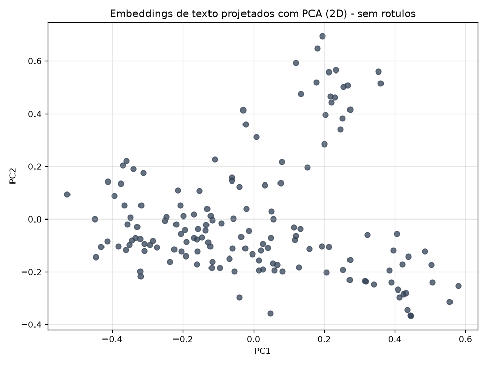
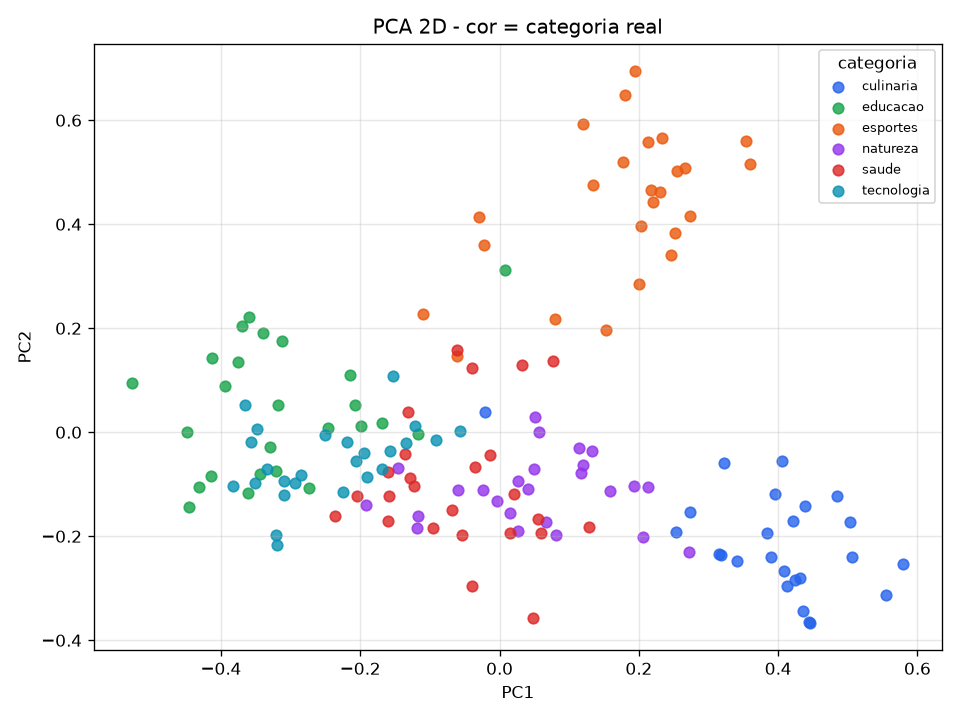
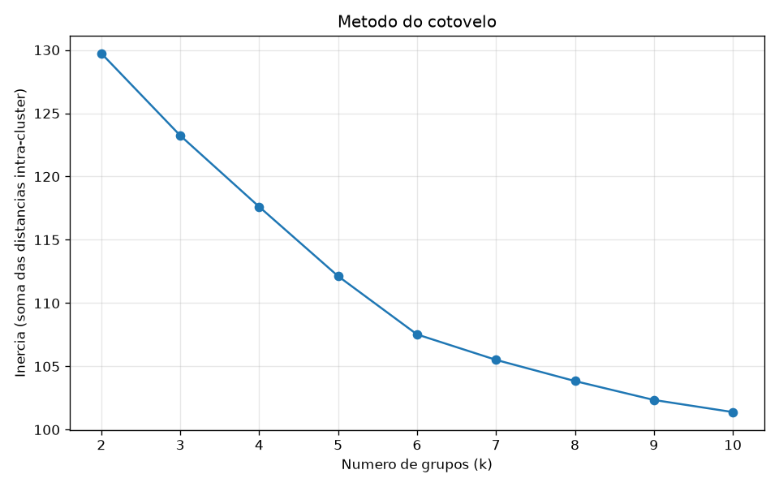
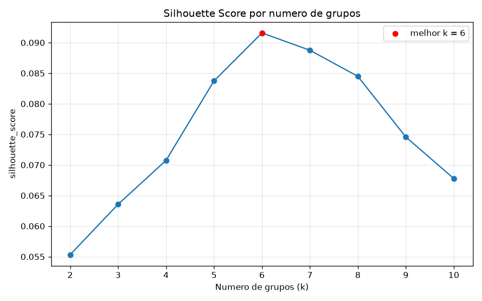
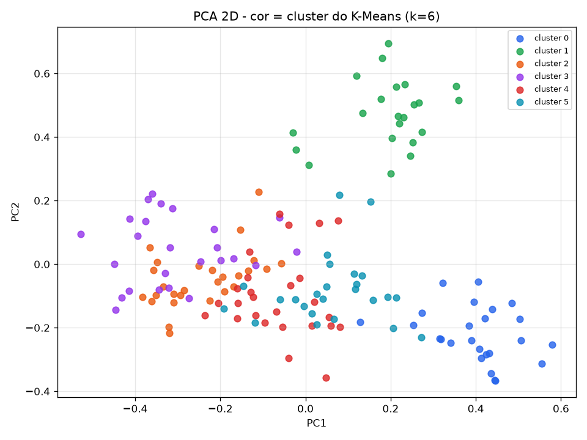
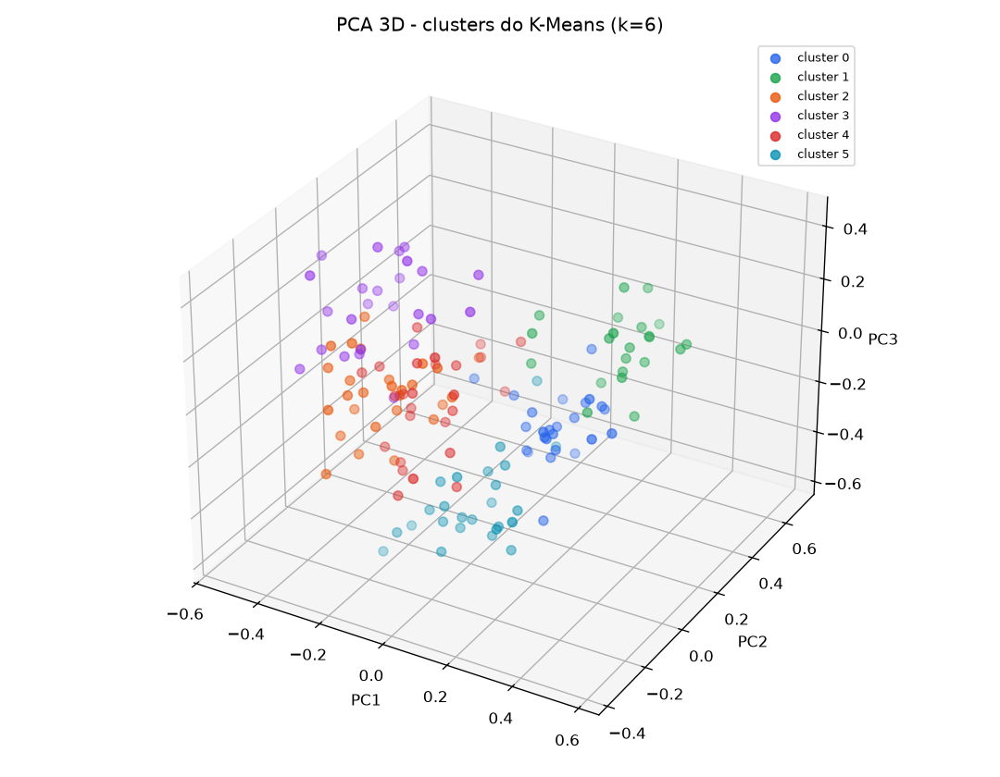

150 textos · 6 categorias. O silhouette_score escolheu
k = 6, coincidindo com o numero real de categorias.
Concordancia com os rotulos reais: Adjusted Rand Index = 0,85
(pureza de 92% a 96% por grupo).
Graficos






Grupos encontrados
Cluster 0
Tema dominante: culinaria
25 textos · pureza 96%
culinaria: 24, saude: 1
Exemplos:
- A receita leva farinha, ovos, acucar e uma pitada de sal.
- O molho de tomate fica mais saboroso com manjericao fresco.
- Assamos o bolo de chocolate por quarenta minutos no forno.
Cluster 1
Tema dominante: esportes
22 textos · pureza 95%
esportes: 21, educacao: 1
Exemplos:
- O jogador marcou um gol incrivel nos ultimos minutos da partida.
- A selecao venceu o campeonato depois de uma disputa de penaltis.
- O time de basquete converteu a cesta de tres pontos no fim.
Cluster 2
Tema dominante: tecnologia
27 textos · pureza 93%
tecnologia: 25, esportes: 1, educacao: 1
Exemplos:
- O novo processador tem oito nucleos e alta velocidade de clock.
- A inteligencia artificial esta transformando o mercado de software.
- Precisamos atualizar o servidor para melhorar o desempenho do site.
Cluster 3
Tema dominante: educacao
25 textos · pureza 92%
educacao: 23, esportes: 1, culinaria: 1
Exemplos:
- O tecnico mudou a formacao tatica no segundo tempo.
- Preparamos brigadeiros para a festa de aniversario.
- A professora explicou o teorema de Pitagoras no quadro.
Cluster 4
Tema dominante: saude
26 textos · pureza 92%
saude: 24, natureza: 2
Exemplos:
- A reciclagem ajuda a reduzir a poluicao do meio ambiente.
- A preservacao das nascentes garante agua limpa para todos.
- A vacina previne diversas doencas graves na populacao.
Cluster 5
Tema dominante: natureza
25 textos · pureza 92%
natureza: 23, esportes: 2
Exemplos:
- O ciclista liderou a etapa nas montanhas com folga.
- O corredor cruzou a linha de chegada em primeiro lugar.
- A floresta amazonica abriga uma enorme diversidade de especies.
Atribuicoes (todos os 150 textos)
| Texto | Categoria real | Cluster |
|---|---|---|
| O novo processador tem oito nucleos e alta velocidade de clock. | tecnologia | 2 |
| A inteligencia artificial esta transformando o mercado de software. | tecnologia | 2 |
| Precisamos atualizar o servidor para melhorar o desempenho do site. | tecnologia | 2 |
| A linguagem Python e muito usada em ciencia de dados. | tecnologia | 2 |
| O smartphone novo vem com uma bateria de longa duracao. | tecnologia | 2 |
| Redes neurais aprendem padroes a partir de grandes volumes de dados. | tecnologia | 2 |
| A computacao em nuvem permite acessar arquivos de qualquer lugar. | tecnologia | 2 |
| Programadores usam controle de versao para colaborar em projetos. | tecnologia | 2 |
| O algoritmo de busca retorna resultados em milissegundos. | tecnologia | 2 |
| A criptografia protege os dados durante a transmissao pela internet. | tecnologia | 2 |
| O aplicativo trava quando abrimos muitas abas ao mesmo tempo. | tecnologia | 2 |
| Placas de video modernas aceleram o treino de modelos de aprendizado. | tecnologia | 2 |
| O banco de dados armazena milhoes de registros de usuarios. | tecnologia | 2 |
| Compiladores traduzem codigo fonte em instrucoes de maquina. | tecnologia | 2 |
| A realidade virtual cria ambientes imersivos em tres dimensoes. | tecnologia | 2 |
| Conteineres facilitam a implantacao de aplicacoes em qualquer ambiente. | tecnologia | 2 |
| O modelo de linguagem gera texto coerente a partir de um comando. | tecnologia | 2 |
| A memoria insuficiente deixa o computador lento durante o uso. | tecnologia | 2 |
| Testes automatizados ajudam a evitar erros no sistema. | tecnologia | 2 |
| O robo aspirador mapeia a casa com sensores a laser. | tecnologia | 2 |
| A rede de fibra optica aumentou muito a velocidade da internet. | tecnologia | 2 |
| Desenvolvedores publicaram uma nova versao do aplicativo hoje. | tecnologia | 2 |
| O chip de seguranca protege as senhas armazenadas no aparelho. | tecnologia | 2 |
| A automacao industrial usa sensores conectados a um sistema central. | tecnologia | 2 |
| O navegador bloqueia rastreadores para proteger a privacidade. | tecnologia | 2 |
| O jogador marcou um gol incrivel nos ultimos minutos da partida. | esportes | 1 |
| A selecao venceu o campeonato depois de uma disputa de penaltis. | esportes | 1 |
| O maratonista treinou meses para completar a corrida de rua. | esportes | 2 |
| O time de basquete converteu a cesta de tres pontos no fim. | esportes | 1 |
| A tenista sacou forte e conquistou o ponto decisivo. | esportes | 1 |
| O tecnico mudou a formacao tatica no segundo tempo. | esportes | 3 |
| Os nadadores competiram na prova dos cem metros livres. | esportes | 1 |
| O ciclista liderou a etapa nas montanhas com folga. | esportes | 5 |
| A torcida vibrou com a vitoria no ultimo lance do jogo. | esportes | 1 |
| O goleiro defendeu o penalti e garantiu o titulo. | esportes | 1 |
| O boxeador venceu a luta por nocaute no terceiro round. | esportes | 1 |
| A ginasta executou um salto perfeito e recebeu nota maxima. | esportes | 1 |
| O piloto largou na pole position e venceu a corrida. | esportes | 1 |
| A equipe de volei conquistou a medalha de ouro. | esportes | 1 |
| O atleta bateu o recorde mundial de salto em distancia. | esportes | 1 |
| A partida de futebol terminou empatada em dois a dois. | esportes | 1 |
| O time avancou com forca ate a linha de fundo do campo. | esportes | 1 |
| O surfista dropou uma onda gigante no campeonato. | esportes | 1 |
| Os jogadores comemoraram a classificacao para a final. | esportes | 1 |
| O arbitro apitou o fim do jogo e encerrou a disputa. | esportes | 1 |
| O corredor cruzou a linha de chegada em primeiro lugar. | esportes | 5 |
| A defesa do time foi decisiva para segurar o resultado. | esportes | 1 |
| O treino de forca melhora o desempenho dos atletas. | esportes | 1 |
| A delegacao conquistou varias medalhas nos jogos. | esportes | 1 |
| O jogador foi expulso apos receber o segundo cartao amarelo. | esportes | 1 |
| A receita leva farinha, ovos, acucar e uma pitada de sal. | culinaria | 0 |
| O molho de tomate fica mais saboroso com manjericao fresco. | culinaria | 0 |
| Assamos o bolo de chocolate por quarenta minutos no forno. | culinaria | 0 |
| O restaurante serve uma feijoada completa aos sabados. | culinaria | 0 |
| A massa da pizza precisa descansar antes de ir ao forno. | culinaria | 0 |
| Refogamos a cebola e o alho antes de adicionar o arroz. | culinaria | 0 |
| O cafe da manha inclui pao quentinho, manteiga e suco de laranja. | culinaria | 0 |
| A sobremesa era um pudim de leite bem cremoso. | culinaria | 0 |
| Temperamos a carne com sal grosso e alecrim antes de grelhar. | culinaria | 0 |
| A sopa de legumes aquece bem nos dias frios de inverno. | culinaria | 0 |
| O chef finalizou o prato com uma reducao de vinho tinto. | culinaria | 0 |
| Batemos as claras em neve para deixar o bolo fofo. | culinaria | 0 |
| O peixe grelhado veio acompanhado de arroz e salada verde. | culinaria | 0 |
| A padaria vende croissants amanteigados logo cedo. | culinaria | 0 |
| Colocamos queijo derretido por cima do macarrao gratinado. | culinaria | 0 |
| O suco de frutas frescas e uma otima opcao no verao. | culinaria | 0 |
| A lasanha ficou pronta com camadas de molho e presunto. | culinaria | 0 |
| Deixamos a massa do pao crescer por duas horas. | culinaria | 0 |
| O hamburguer artesanal vinha com bacon e cebola caramelizada. | culinaria | 0 |
| O doce de leite caseiro acompanha bem o queijo. | culinaria | 0 |
| Servimos o risoto de cogumelos ainda bem cremoso. | culinaria | 0 |
| A salada tinha folhas verdes, tomate e azeite de oliva. | culinaria | 0 |
| O churrasco de domingo reuniu a familia no quintal. | culinaria | 0 |
| Preparamos brigadeiros para a festa de aniversario. | culinaria | 3 |
| O tempero da comida ficou perfeito com pimenta e limao. | culinaria | 0 |
| A floresta amazonica abriga uma enorme diversidade de especies. | natureza | 5 |
| O rio corre entre as montanhas ate desaguar no mar. | natureza | 5 |
| As abelhas sao essenciais para a polinizacao das plantas. | natureza | 5 |
| O desmatamento ameaca o habitat de muitos animais silvestres. | natureza | 5 |
| A chuva forte encheu os lagos e regou as plantacoes. | natureza | 5 |
| O passaro construiu o ninho no alto da arvore. | natureza | 5 |
| As tartarugas marinhas retornam a praia para desovar. | natureza | 5 |
| O vento espalha as sementes pelo campo aberto. | natureza | 5 |
| A reciclagem ajuda a reduzir a poluicao do meio ambiente. | natureza | 4 |
| O sol nasce atras das colinas iluminando o vale. | natureza | 5 |
| A geleira derrete mais rapido por causa do aquecimento global. | natureza | 5 |
| As raizes das arvores seguram o solo e evitam a erosao. | natureza | 5 |
| O recife de corais abriga peixes de cores vibrantes. | natureza | 5 |
| A trilha na mata revela cachoeiras escondidas. | natureza | 5 |
| Os lobos vivem em matilhas nas regioes frias do norte. | natureza | 5 |
| A borboleta pousou suavemente sobre a flor amarela. | natureza | 5 |
| O deserto tem noites frias e dias muito quentes. | natureza | 5 |
| A preservacao das nascentes garante agua limpa para todos. | natureza | 4 |
| O urso hiberna durante o inverno rigoroso. | natureza | 5 |
| As folhas caem no outono e cobrem o chao da floresta. | natureza | 5 |
| A savana africana e o lar de leoes, zebras e girafas. | natureza | 5 |
| O oceano cobre a maior parte da superficie do planeta. | natureza | 5 |
| A montanha nevada atrai alpinistas do mundo inteiro. | natureza | 5 |
| O ecossistema depende do equilibrio entre as especies. | natureza | 5 |
| A neblina cobriu o vale logo ao amanhecer. | natureza | 5 |
| A vacina previne diversas doencas graves na populacao. | saude | 4 |
| O medico receitou um antibiotico para tratar a infeccao. | saude | 4 |
| A pressao arterial deve ser monitorada com regularidade. | saude | 4 |
| Exercicios fisicos melhoram a saude do coracao. | saude | 4 |
| O paciente se recuperou bem apos a cirurgia. | saude | 4 |
| Uma dieta equilibrada previne muitas doencas cronicas. | saude | 4 |
| Dormir bem e fundamental para a recuperacao do corpo. | saude | 4 |
| O enfermeiro mediu a temperatura e a saturacao do paciente. | saude | 4 |
| Beber agua com frequencia ajuda a manter o corpo hidratado. | saude | 4 |
| A fisioterapia ajudou o joelho a recuperar o movimento. | saude | 4 |
| O exame de sangue detectou uma leve anemia. | saude | 4 |
| A consulta com o dentista preveniu problemas nos dentes. | saude | 4 |
| O uso de mascara reduz a transmissao de virus respiratorios. | saude | 4 |
| A meditacao ajuda a diminuir o estresse do dia a dia. | saude | 4 |
| O cardiologista recomendou reduzir o sal na alimentacao. | saude | 4 |
| A vacinacao infantil protege contra sarampo e poliomielite. | saude | 4 |
| Caminhar todos os dias melhora a circulacao sanguinea. | saude | 4 |
| O tratamento incluiu repouso e muita hidratacao. | saude | 4 |
| A nutricionista montou um cardapio rico em fibras. | saude | 0 |
| O hospital ampliou o numero de leitos na emergencia. | saude | 4 |
| A saude mental merece a mesma atencao que a fisica. | saude | 4 |
| O medico pediu uma tomografia para investigar a dor. | saude | 4 |
| Lavar as maos com frequencia previne muitas infeccoes. | saude | 4 |
| A pratica de alongamento evita lesoes musculares. | saude | 4 |
| O check-up anual ajuda a detectar doencas no inicio. | saude | 4 |
| A professora explicou o teorema de Pitagoras no quadro. | educacao | 3 |
| Os alunos entregaram o trabalho de historia na data marcada. | educacao | 3 |
| A biblioteca da escola recebeu novos livros de literatura. | educacao | 3 |
| O estudante revisou a materia antes da prova de matematica. | educacao | 3 |
| A universidade abriu inscricoes para os cursos de graduacao. | educacao | 3 |
| O professor corrigiu as redacoes durante o fim de semana. | educacao | 3 |
| A aula de geografia abordou os climas do Brasil. | educacao | 3 |
| Os estudantes participaram de uma feira de ciencias. | educacao | 3 |
| A escola adotou tablets para as atividades em sala. | educacao | 3 |
| O curso online oferece certificado ao final das aulas. | educacao | 3 |
| A monitoria ajuda os alunos com dificuldades em fisica. | educacao | 3 |
| O vestibular avalia conhecimentos de varias disciplinas. | educacao | 3 |
| A turma leu um classico da literatura brasileira. | educacao | 3 |
| O laboratorio de quimica tem equipamentos para experimentos. | educacao | 2 |
| A palestra motivou os jovens a seguir a carreira academica. | educacao | 3 |
| O diretor anunciou o calendario do proximo semestre letivo. | educacao | 3 |
| Os alunos apresentaram seminarios sobre o meio ambiente. | educacao | 3 |
| A bolsa de estudos cobre a mensalidade da faculdade. | educacao | 3 |
| A prova final avaliou todo o conteudo do ano. | educacao | 1 |
| O intercambio permite estudar em outro pais por um ano. | educacao | 3 |
| A pesquisa cientifica exige metodo e dedicacao. | educacao | 3 |
| O caderno estava cheio de anotacoes sobre a aula. | educacao | 3 |
| A educacao infantil estimula a curiosidade das criancas. | educacao | 3 |
| O tutor explicou o exercicio passo a passo. | educacao | 3 |
| A formatura reuniu os alunos e suas familias no auditorio. | educacao | 3 |
Resumo numerico da execucao
Modelo de deep learning: sentence-transformers/paraphrase-multilingual-MiniLM-L12-v2
Dimensao dos embeddings: 384
Numero de textos: 150
Categorias: ['culinaria', 'educacao', 'esportes', 'natureza', 'saude', 'tecnologia']
== PCA (visualizacao) ==
PC1=7.67%, PC2=6.00%, PC3=5.02%
Variancia acumulada 2 PCs: 13.67%
Variancia acumulada 3 PCs: 18.69%
k=2: inercia=129.73, silhouette=0.0553
k=3: inercia=123.24, silhouette=0.0636
k=4: inercia=117.61, silhouette=0.0708
k=5: inercia=112.13, silhouette=0.0837
k=6: inercia=107.53, silhouette=0.0916
k=7: inercia=105.52, silhouette=0.0888
k=8: inercia=103.84, silhouette=0.0845
k=9: inercia=102.35, silhouette=0.0746
k=10: inercia=101.39, silhouette=0.0678
MELHOR k (silhouette) = 6 (silhouette = 0.0916)
== CARACTERIZACAO DOS GRUPOS ==
Cluster 0: 25 textos | dominante = 'culinaria' (24/25 = 96%)
composicao: {'culinaria': 24, 'saude': 1}
exemplo: A receita leva farinha, ovos, acucar e uma pitada de sal.
exemplo: O molho de tomate fica mais saboroso com manjericao fresco.
exemplo: Assamos o bolo de chocolate por quarenta minutos no forno.
Cluster 1: 22 textos | dominante = 'esportes' (21/22 = 95%)
composicao: {'esportes': 21, 'educacao': 1}
exemplo: O jogador marcou um gol incrivel nos ultimos minutos da partida.
exemplo: A selecao venceu o campeonato depois de uma disputa de penaltis.
exemplo: O time de basquete converteu a cesta de tres pontos no fim.
Cluster 2: 27 textos | dominante = 'tecnologia' (25/27 = 93%)
composicao: {'tecnologia': 25, 'esportes': 1, 'educacao': 1}
exemplo: O novo processador tem oito nucleos e alta velocidade de clock.
exemplo: A inteligencia artificial esta transformando o mercado de software.
exemplo: Precisamos atualizar o servidor para melhorar o desempenho do site.
Cluster 3: 25 textos | dominante = 'educacao' (23/25 = 92%)
composicao: {'esportes': 1, 'culinaria': 1, 'educacao': 23}
exemplo: O tecnico mudou a formacao tatica no segundo tempo.
exemplo: Preparamos brigadeiros para a festa de aniversario.
exemplo: A professora explicou o teorema de Pitagoras no quadro.
Cluster 4: 26 textos | dominante = 'saude' (24/26 = 92%)
composicao: {'natureza': 2, 'saude': 24}
exemplo: A reciclagem ajuda a reduzir a poluicao do meio ambiente.
exemplo: A preservacao das nascentes garante agua limpa para todos.
exemplo: A vacina previne diversas doencas graves na populacao.
Cluster 5: 25 textos | dominante = 'natureza' (23/25 = 92%)
composicao: {'esportes': 2, 'natureza': 23}
exemplo: O ciclista liderou a etapa nas montanhas com folga.
exemplo: O corredor cruzou a linha de chegada em primeiro lugar.
exemplo: A floresta amazonica abriga uma enorme diversidade de especies.
Tabela de contingencia:
cluster 0 1 2 3 4 5
categoria
culinaria 24 0 0 1 0 0
educacao 0 1 1 23 0 0
esportes 0 21 1 1 0 2
natureza 0 0 0 0 2 23
saude 1 0 0 0 24 0
tecnologia 0 0 25 0 0 0
Adjusted Rand Index: 0.8456